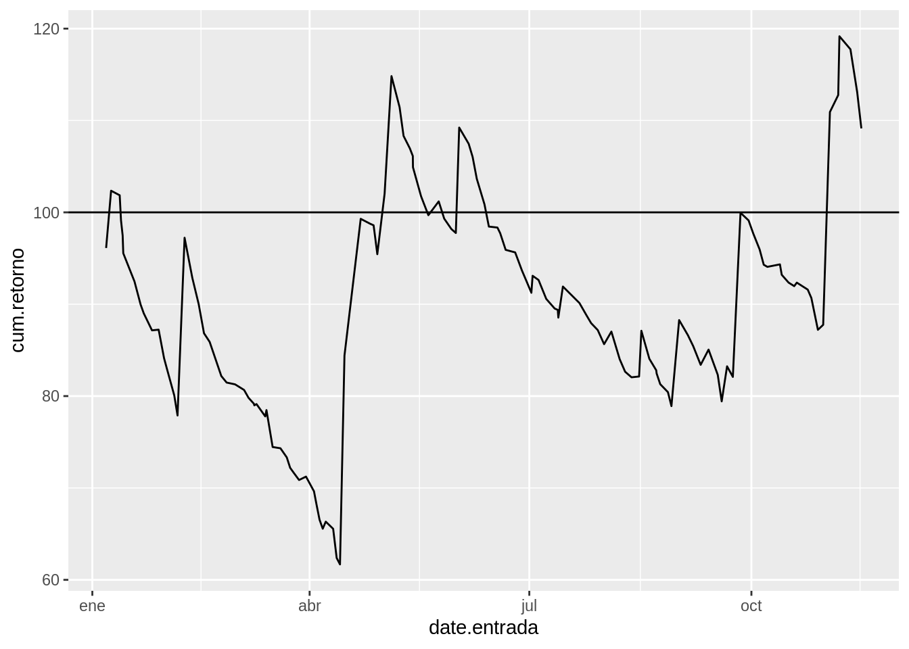

Implementación de indicadores 


Sinopsis
Es una breve descripción del flujo de las funciones para realizar backtesting a partir de una estrategia y el uso de este para la implementación de distintas estrategias de trading. Aún se esta mejorando el uso de este.
Estrategia
Se considera una estrategia como una combinación de indicadores y reglas para generar señales para entrar y salir de transacciones. La idea detrás de esto se presenta en la siguiente gráfica:

Esto permite realizar distintas modificaciones a la estrategia:
Si se desea realizar una estrategia con mas de una combinación indicador-señal. Se puede generar varias señales (con la función Indicador_señal(.)) y luego con alguna función ( mix_señal(.)) combinarlas para convertirla en una señal.
A partir de la señal generada se utiliza la función orden(.) la cual puede variar. Por ejemplo: puede ser ordenes normales, ordenes con stop loss, ordenes con stop loss movil, dependiendo de la que quede mejor con la estrategia. (Nota: no todas les funciona el mismo sistema de ordenes, por ejemplo, bandas de bollinger no funciona muy bien con un stop loss movil ya que es un indicador para identificar señales en rango (choppy market) es mejor un stop loss fijo, funcionando como una especie de support)
Y por ultimo, la salida de la función orden(.) se pasa por transacciones, la cuál computa el backtesting de la estrategia.
Algo importante para notar en este caso es que las tres funciones principales Indicador_señal(.), orden(.) y transacciones(.) necesitan de los datos, esto permite poder utilizar en cada paso información diferente de los datos, es claro que en el calculo de un indicador se utiliza diferente información, al igual que la función de orden(.) que por construcción puede utilizar cualquier información de los datos, por ejemplo el stop loss movil utiliza el promedio movil ponderado de los close para ir moviendo el valor del stop movil en vez de tomar la serie del close ya que esta esta es mas volátil.
Tabla de especificaciones tbl.specs
En esta tabla se encuentra las especificaciones esenciales para poder programar la estrategia. En ella se encuentra lo siguiente:
- nameInd := Nombre corto y único para llamar la estrategia.
- f := Nombre de la función que calcula los indicadores.
- dat.f := Nombre de la función que selecciona los datos, los cuales entrar como argumento principal a la función f.
- sig.f := Nombre de la función que calcula las señales a partir de la salida de f.
- parms := Parámetros para el calculo del indicador, en forma de lista.
- sig.parms := Parámetros para el calculo de la señal, en forma de lista.
tbl.specs <- tribble(
~nameInd, ~f, ~dat.f, ~sig.f, ~parms, ~sig.parms,
'adx', 'ADX', 'hlc', 'sig.ADXL', list(), list(limit = 25),
'smaTwo', 'SMAtwo', 'cl', 'sig.SMAtwo', list(nfast = 30, nslow = 100), list(),
'bands', 'BBands', 'hlc', 'sig.BBands', list(), list()
)
tbl.specs## # A tibble: 3 x 6
## nameInd f dat.f sig.f parms sig.parms
## <chr> <chr> <chr> <chr> <list> <list>
## 1 adx ADX hlc sig.ADXL <list [0]> <list [1]>
## 2 smaTwo SMAtwo cl sig.SMAtwo <list [2]> <list [0]>
## 3 bands BBands hlc sig.BBands <list [0]> <list [0]>Por el momento son muchas cosas para determinar, pero esto facilita la forma de poder usarlas en la forma actual del código. Si en las columnas parms y sig.parms se dejan listas vacías, el toma los parámetros que tiene por defecto las funciones f y sig.f o pueden variar al antojo (como para hacer tunning de la estrategia).
NOTA: Es importante que los nombres de las funciones en la tabla tbl.specs estén cargadas antes de proseguir. La mayoría de funciones para calcular indicadores salen del paquete TTR, por lo tanto es necesario siempre tener cargado este paquete.
indSeg(.) la función Indicador_señal
Esta función genera un vector con las señales producto de un indicador. Está se encuentra en “src/Funciones/FunEstrategia.R” y cuenta con los siguiente parámetros.
args(indSeg)## function (parm = NULL, sigParm = NULL, datos, indName)
## NULLComo se puede ver en los argumentos, es necesario darle la tabla de datos, el nombre del indicador indName y opcionalmente se pueden las listas de los parámetros parm y sigParm. La ventaja de esta función es que nos permite realizar tunning de los parametros o poder combinar varias señales en una.
Funciones f y sig.f
Estas funciones deben estar cargadas, la mayoría de veces la función que calcula el indicador f se encuentra en el paquete TTR. Pero se pueden crear nuevos indicadores escribiendo su función en el script “src/Funciones/Reglas.R”, al igual que la función sig.f y dat.f, de la siguiente forma ver script:
# seleccionar datos -------------------------------------------------------
cl <- . %>% select(close)
# Nuevos indicadores ------------------------------------------------------
SMAtwo <- function(price, nfast = 15, nslow = 80){
# Estrategía dos medias
price <- pull(price)
tibble(difMA = SMA(price, nfast) - SMA(price, nslow))
}
# Funciones señales -------------------------------------------------------
sig.SMAtwo <- function(X){
# Salida de SMAtwo con columnas('difMA')
-sigThresh(X[,'difMA'], 0, 0)
}Estas funciones componen el indicador de la segunda fila de la tabla tbl.specs.
orden(.)
Se separo la función ordenes con el objetivo de poder cambiar la forma de salir de la transacción la mayoría en base a stop loss o take profit. Para implementar una nueva metodología para ordenes, se encuentran en “src/Funciones/Ordenes.R” de la siguiente forma: ver script
OrdenesSLTP <- function(signal, datos, vloss, vfee = fee, vprofit = profit){
isCont <- sum(!is.na(unique(signal))) == 2
if(is.na(vloss)) vloss <- 0.999
if(!isCont){# Discontinuas
infOrdenISLTP <- vencomDisSLTP(signal, datos, vloss, vprofit, vfee)
}else{# Continuas
infOrdenISLTP <- vencomConSLTP(signal, datos, vloss, vprofit, vfee)
}
return(infOrdenISLTP)
}En donde las funciones vencomDisSLTP y vencomConSLTP, depende si la señal es discontinua o continua, determinado por la variable isCont. Se necesitan crear las tres funciones tanto vencomDisSLTP y vencomConSLTP como OrdenesSLTP, esta ultima con el fin de poderla usar en el flujo de la estrategia.
Los principales argumentos de esta función siempre van a ser la señal signal que es un vector y la tabla de datos, los argumento secundarios van a variar dependiendo de lo que necesite las funciones de ordenes.
fun.tran la función de transacciones
Y por ultimo, esta la función que a partir de las ordenes calcula el backtesting. Está función se encuentra en “src/Funciones/FunEstrategia.R” y tiene los siguiente parámetros.
args(fun.tran)## function (ordenes, datos)
## NULLNecesita la salida de la función ordenes pudiendo ser un vector o un tibble (data_frame) que contenga una columna llamada “orden” con las ordenes en ella. Esto es porque en algunos casos la función ordenes puede sacar mas de un vector resultado de ella, como lo son los tipos de ordenes de salida de la transacción. Y también necesita la tabla de datos.
Ejemplos
Correr una estrategia
En caso que estemos programando una nueva estrategia, se puede construir desde cero. Con esto hago referencia tanto la función que genera los nuevos indicadores (siendo acompañada de una función de señales) y una nueva forma de generar las ordenes. El siguiente ejemplo combina dos promedios móviles con un stop loss móvil.
datos30M_bch <- tbl.datos$data[[5]] %>%
mutate(ma = EMA(close, 5),
maRet = ROC(ma, 1))
twoSmaSig <- indSeg(list(nfast = 35, nslow = 63), NULL,
datos = datos30M_bch, indName = 'smaTwo')
ordenSLM <- OrdenesSLMovil(twoSmaSig, datos30M_bch, 0.03)
tbl_trans <- fun.tran(ordenSLM, datos30M_bch)
tbl_trans## # A tibble: 132 x 5
## tran.num retorno date.entrada date.salida cum.retorno
## <dbl> <dbl> <dttm> <dttm> <dbl>
## 1 1 -0.0388 2018-01-06 17:00:00 2018-01-06 21:30:00 96.1
## 2 2 0.0649 2018-01-08 18:30:00 2018-01-10 09:30:00 102.
## 3 3 -0.00485 2018-01-12 08:00:00 2018-01-12 11:00:00 102.
## 4 4 -0.0269 2018-01-12 21:00:00 2018-01-13 04:30:00 99.1
## 5 5 -0.0167 2018-01-13 13:30:00 2018-01-13 15:30:00 97.5
## 6 6 -0.0197 2018-01-13 19:30:00 2018-01-14 17:00:00 95.5
## 7 7 -0.0322 2018-01-18 11:00:00 2018-01-18 23:00:00 92.5
## 8 8 -0.0272 2018-01-21 00:00:00 2018-01-21 03:00:00 90.0
## 9 9 -0.0105 2018-01-22 07:00:00 2018-01-22 11:30:00 89.0
## 10 10 -0.0209 2018-01-25 17:00:00 2018-01-26 06:30:00 87.2
## # … with 122 more rowsplotTest(tbl_trans)
La funcionalidad de separar las funciones en este caso es poder en dado caso buscar una forma de encontrar los parámetros óptimos del indicador y el porcentaje de loss. Como se puede ver en la gráfica este indicador identifica transacciones de compra con alto profit, con el posible fin de mejora este se puede combinar con algún otro indicador para descartar malas entradas.
Combinar indicadores
Vamos a combinar dos indicadores el de dos promedios móviles y el ADX, este ultimo nos permite saber la fuerza de la tendencia y quizás sea una buena forma de descartar una gran cantidad de entradas erróneas del indicador base. Esto se puede llevar de la siguiente forma:
twoSmaSig <- indSeg(list(nfast = 20, nslow = 80), NULL,
datos = datos30M_bch, indName = 'smaTwo')
adxSig <- indSeg(list(n=16), list(limit= 30),
datos = datos30M_bch, indName = 'adx')
sigmix <- mix.ordenConfirm(twoSmaSig, adxSig)
# orden <- Ordenes(sigmix)
ordenSLM <- OrdenesSLMovil(sigmix, datos30M_bch, 0.028)
tbl_trans <- fun.tran(ordenSLM, datos30M_bch)
tbl_trans## # A tibble: 42 x 5
## tran.num retorno date.entrada date.salida cum.retorno
## <dbl> <dbl> <dttm> <dttm> <dbl>
## 1 1 -0.0255 2018-01-07 10:00:00 2018-01-07 14:00:00 97.5
## 2 2 -0.0251 2018-01-13 17:00:00 2018-01-14 21:00:00 95.0
## 3 3 -0.00287 2018-01-26 03:30:00 2018-01-26 04:00:00 94.7
## 4 4 -0.00289 2018-01-28 13:30:00 2018-01-30 00:00:00 94.5
## 5 5 0.0829 2018-02-08 11:30:00 2018-02-08 23:00:00 102.
## 6 6 -0.0321 2018-03-01 10:00:00 2018-03-02 00:00:00 99.0
## 7 7 0.00579 2018-03-10 01:30:00 2018-03-12 09:30:00 99.6
## 8 8 -0.0262 2018-03-14 20:30:00 2018-03-15 02:00:00 97.0
## 9 9 -0.0316 2018-03-16 16:30:00 2018-03-16 21:30:00 93.9
## 10 10 -0.0130 2018-03-20 01:00:00 2018-03-21 07:30:00 92.7
## # … with 32 more rowsplotTest(tbl_trans)Como se puede ver en este ejemplo tan solo se repite el uso de la función indSeg(.) y se incluye una nueva función mix.ordenConfirm(.) la cuál combina las señales twoSmaSig y adxSig. Esta así pensando para realizar la búsqueda y combinación de indicadores de forma rápida, pero en el caso que ya estamos seguros que queremos incluir esta combinación de indicadores como un indicador fijo. La opción pensada al crear esta forma de programar la estrategia, es crear una función f del indicador que calcule el paquete de indicadores, y una función sig.f que calcule las señales y las combine, así de esta forma incluirla de forma fija a la tabla de especificaciones. Y esto nos permite combinar un sin numero de indicadores para crear la estrategia, o quizás se puede implementar un modelo que utilice como insumo un paquete de indicadores y como salida un vector de señales o ordenes.
Obtener tabla de indicadores
Para obtener una tabla de todos los indicadores calculados, se puede utilizar la función get_indicators la cuál se encuentra en el script “src/Funciones/FunEstrategia.R”
get_indicators(datos30M_bch)[300:310,] # Para que imprima las filas 300:310 no mas.## # A tibble: 11 x 9
## adx.DIp adx.DIn adx.DX adx.ADX smaTwo.difMA bands.dn bands.mavg bands.up
## <dbl> <dbl> <dbl> <dbl> <dbl> <dbl> <dbl> <dbl>
## 1 38.2 13.5 47.9 19.8 0.00231 0.146 0.150 0.154
## 2 48.1 10.3 64.8 23.0 0.00254 0.144 0.150 0.157
## 3 43.3 9.25 64.8 26.0 0.00273 0.142 0.151 0.160
## 4 37.8 13.5 47.4 27.6 0.00271 0.142 0.152 0.161
## 5 35.6 14.7 41.6 28.6 0.00293 0.142 0.152 0.162
## 6 34.5 14.2 41.6 29.5 0.00305 0.142 0.153 0.163
## 7 33.8 13.7 42.2 30.4 0.00326 0.143 0.153 0.164
## 8 33.6 13.3 43.2 31.3 0.00353 0.144 0.154 0.164
## 9 33.3 12.8 44.5 32.3 0.00379 0.145 0.155 0.164
## 10 32.4 12.0 46.0 33.2 0.00404 0.145 0.155 0.165
## 11 39.1 10.7 57.1 34.9 0.00432 0.146 0.156 0.166
## # … with 1 more variable: bands.pctB <dbl>Notas
- Encontrar una forma de incluir la función de ordenes y/o reducir la tabla de especificaciones
- Unir las 3 funciones de ordenes de alguna forma, que no sea enredado leerlas luego.
Pendientes
- Falta pensar en un parámetro de calidad de la estrategia o forma de evaluar que tan buena es.